6.4.2. Поворот координатных осей
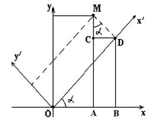
Выведем формулу преобразования координат при повороте
координатных осей.
Повернём оси координат на угол  относительно
исходной системы координат. Координаты точки
относительно
исходной системы координат. Координаты точки  в
системе координат 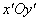 равны 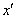 и
в
системе координат 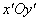 равны 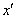 и  .
Найдём её координаты в системе координат 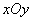.
В треугольнике : 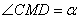,
.
Найдём её координаты в системе координат 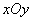.
В треугольнике : 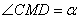,  ,
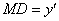.
,
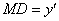.
относительно
исходной системы координат. Координаты точки в
системе координат 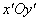 равны 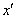 и .
Найдём её координаты в системе координат 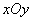.
В треугольнике : 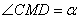, ,
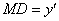. Следовательно,
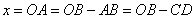,
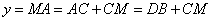.
Поскольку
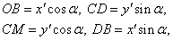
то
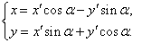
Выражение старых
координат (x,y) произвольной точки М через новые
координаты (x¢,y¢) этой же точки при повороте осей на
угол a..
(3)
Эти формулы выражают старые координаты 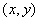 произвольной точки через новые координаты этой же точки при повороте осей на
угол .
через новые координаты этой же точки при повороте осей на
угол .Формулы, выражающие новые координаты точки через
её старые координаты , получим из следующих
соображений: если новая система получена поворотом старой на угол , то старая система получается
поворотом новой на угол 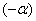, поэтому в
равенствах (3) можно поменять местами старые и новые координаты, заменяя одновременно
на .
через
её старые координаты , получим из следующих
соображений: если новая система получена поворотом старой на угол , то старая система получается
поворотом новой на угол 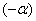, поэтому в
равенствах (3) можно поменять местами старые и новые координаты, заменяя одновременно
на .Выполнив это преобразование, получим
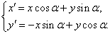
Выражение новых
координат (x¢,y¢) произвольной точки М через
старые координаты (x,y)
этой же точки при повороте осей на угол a.
При этом, например, уравнения директрис эллипса
(гиперболы) и параболы принимают вид:
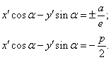
Уравнения
директрис эллипса (гиперболы) и параболы при повороте осей на угол a.